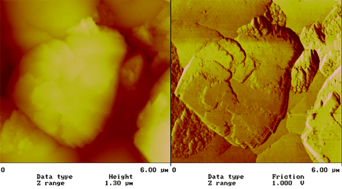

掃描探針顯微術
掃描穿隧顯微術 (Scanning Tunneling Microscopy, STM)
在金屬探針及導電樣品間加上小電壓，並將兩者距離維持在數埃至數十埃間，使探針尖端原子團與樣品表面的量子穿隧電流保持定值，而測得表面結構形狀，具有原子解析度。
在SPM技術中具有最佳解析度，但由於無法在非導體上操作，故目前主要應用於基礎性學術研究。

原子力顯微術 (Atomic Force Microscopy, AFM)
探針一般由成份為Si或Si3N4懸臂樑及針尖組成，尖端直徑20至100nm，藉著針尖與樣品間的原子作用力，使懸臂樑產生位移，而測得表面結構形狀，具有原子解析度。光偏折為最常用之距離控制機制。
操作上分接觸式(DC式)、非接觸式及間歇接觸式(AC式)。
應用於奈米級表面形狀量測，粗糙度分析、生醫樣品檢測等等。
摩擦力顯微術 (Friction Force Microscopy, FFM)
在接觸式AFM 中，利用四象限光電二極體，同時偵測探針的垂直及水平位移，而得到固定正向力下之表面摩擦力，在一般原子力顯微鏡皆有此功能。
FFM應用於樣品結構成份區分，表面潤滑特性分析，表面摩擦力量測等等。
目前大多是測量摩擦力相對值，絕對值量測有幾種不同方法，但正確性及重複性仍有待提升。
磁力顯微術 (Magnetic Force Microscopy, MFM
利用鍍有磁性薄膜之矽探針，藉著探針尖端的 磁矩與磁性材料間磁力來檢測表面磁特性，解析度約為50nm。
早期使用非接觸式AFM方式，只能得到磁力影像；現大多利用兩段掃描，先得到表面形狀，然後在定高度掃描取得磁力影像。
應用於磁性薄膜、磁記憶裝置、磁記錄結果分析等等。
近場光學顯微鏡 (Near-Field Scanning Optical Microscopy, NSOM)
近場光學顯微鏡是近年來發展迅速的表面檢測儀器，可突破傳統光學顯微鏡的繞射極限，而得到30至100 nm左右的解析度。
原理乃是利用與原子力顯微鏡相似之距離回饋機制，將一光學孔穴在樣品表面1至20 nm上掃描，而得到表面高低及光學影像，其中最常用之探針為尖端直徑在50至100 nm的光纖探針。
掃描電容顯微術 (Scanning Capacitance Microscopy, SCM)
隨著半導體科技的蓬勃發展，與其有關的分析技術也開始倍受重視 ，SCM便是其中之一。SCM可以分析半導體元件的摻雜輪廓(doping profile)，除了定性的分析之外，還具有定量分析的能力。而且較其他在半導體科技裡所應用的分析技術不同的是，SCM是一種非破壞性的分析量測，不會對試片造成破壞。
其原理是利用一導電探針與試片表面的交互作用。在探針和試片之間所加的電場，造成試片裡載子的移動。藉著外加一AC電壓，量測其電容訊號，來分析試片。